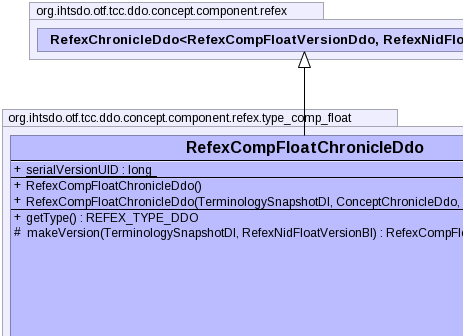
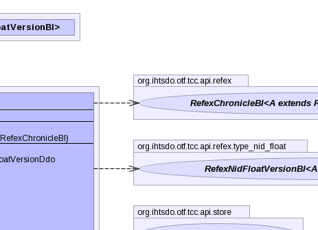
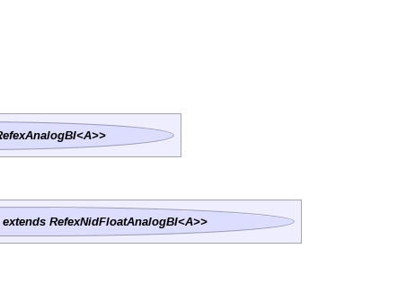
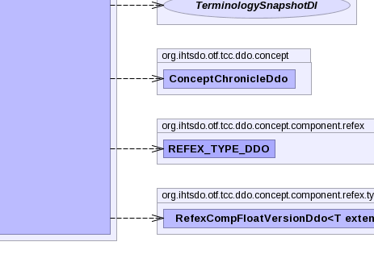
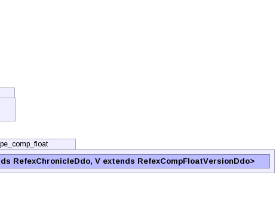

public class RefexCompFloatChronicleDdo extends RefexChronicleDdo<RefexCompFloatVersionDdo,RefexNidFloatVersionBI>
|  |  |  |
|  |  |
| Modifier and Type | Field and Description |
|---|---|
static long |
serialVersionUID |
referencedComponentReference, refexExtensionIdentifierReferenceadditionalIds, concept, refexes| Constructor and Description |
|---|
RefexCompFloatChronicleDdo() |
RefexCompFloatChronicleDdo(TerminologySnapshotDI ss,
ConceptChronicleDdo concept,
RefexChronicleBI another) |
| Modifier and Type | Method and Description |
|---|---|
REFEX_TYPE_DDO |
getType()
Method description
|
protected RefexCompFloatVersionDdo |
makeVersion(TerminologySnapshotDI ss,
RefexNidFloatVersionBI version) |
getReferencedComponentReference, getRefexExtensionIdentifierReference, setReferencedComponentReference, setRefexExtensionIdentifierReferencebeforeUnmarshal, equals, getAdditionalIds, getComponentNid, getConcept, getIdCount, getPrimordialComponentUuid, getRefexes, getUuids, getVersionCount, getVersions, hashCode, setAdditionalIds, setComponentNid, setPrimordialComponentUuid, setRefexes, setVersions, toStringpublic static final long serialVersionUID
public RefexCompFloatChronicleDdo()
public RefexCompFloatChronicleDdo(TerminologySnapshotDI ss, ConceptChronicleDdo concept, RefexChronicleBI another) throws IOException, ContradictionException
IOExceptionContradictionExceptionprotected RefexCompFloatVersionDdo makeVersion(TerminologySnapshotDI ss, RefexNidFloatVersionBI version) throws IOException, ContradictionException
makeVersion in class ComponentChronicleDdo<RefexCompFloatVersionDdo,RefexNidFloatVersionBI>IOExceptionContradictionExceptionpublic REFEX_TYPE_DDO getType()
RefexChronicleDdogetType in class RefexChronicleDdo<RefexCompFloatVersionDdo,RefexNidFloatVersionBI>Copyright © 2013 International Health Terminology Standards Development Organisation. All rights reserved.